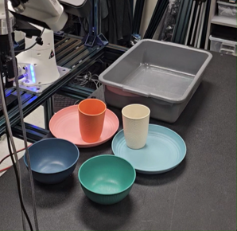
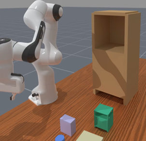
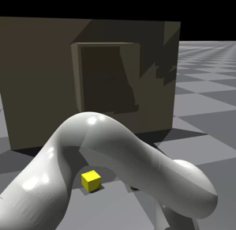
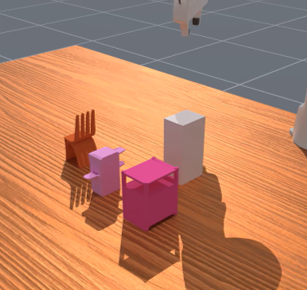
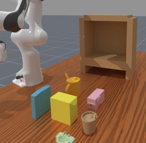
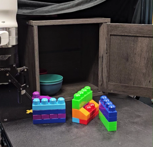
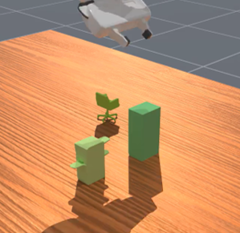

Select a long-horizon task to execute with DISCO:








Despite recent advances in policy learning, long-horizon manipulation remains difficult because learned policies must avoid compounding errors while preserving future feasibility. While search-based planning can explicitly reason over such future consequences, it quickly becomes expensive in high-dimensional continuous action spaces. This raises a central question: how can long-horizon reasoning from search be transferred into policies in continuous action spaces? To this end, we propose DISCO: Distilled Tree Search over Continuous Actions. DISCO uses progressive-widening MCTS in physics simulation to generate long-horizon plans. During search, a learned policy proposes continuous actions, while a learned value function scores actions by their expected progress toward task completion. Using GPU-parallelized simulation, DISCO periodically distills MCTS-generated plans into the policy-value model, improving the action proposals and value estimates used in subsequent searches. Finally, the learned policy value model can be directly deployed without the need for simulator-based search at test time. Across simulated and real-world rearrangement tasks, DISCO out performs behavior cloning, reinforcement learning, and search-based baselines.







DISCO can execute the task of packing multiple objects into a shelf. Each scene contains from 2 to 7 objects which have to be placed in a shelf without any object dropping or falling out. Since object placement is not collision-constrained, the robot may exploit physical interactions by pushing around previously placed objects while inserting new ones, while being aware of objects falling out. Shelves are constructed with randomized dimensions. This task requires reasoning about object geometry, shelf occupancy, and contact-rich placement dynamics. We report reward as the fraction of objects inside the shelf, while during search we use the fraction of total object volume contained in the shelf as guidance. This task is given a simulation budget of β = 270,000, and a pre-training dataset of 14,000 pick and place samples. DISCO is trained on 50 environments and tested on 15 environments.
DISCO can execute the task of stacking multiple objects of varying geometry on top of each other. Each scene contains from 2 to 6 objects which must be stably stacked into a single vertical tower, without knocking any off. This requires reasoning about object geometry, support stability, and contact dynamics, since each object must remain stably supported without toppling the tower. We report reward as the fraction of objects in the tower, while search guidance uses normalized tower-height. This task is given a simulation budget of β = 27,000, and a pre-training dataset of 14,000 pick and place samples. DISCO is trained on 50 environments and tested on 15 environments.
DISCO can solve the same task in multiple, distinct ways. This multi-modality arises from distillation: the policy is trained on many different plans for the same task, each capturing a different way of solving it. As a result, when deployed, DISCO's policy produces actions that make task progress along different solution paths. Shown below are two different ways in which DISCO builds a stable stack of objects.
We compare DISCO against the 3DFA baseline on two real-world rearrangement tasks. The 3DFA baseline is a modified version of the 3DFA model trained on the sub-task demonstrations that were used to train DISCO's initial policy, and is transferred sim-to-real directly. Each video shows one trial; the caption reports the number of objects successfully packed. Please refer to the paper for more details.
A real-world version of the shelf-packing task. We start the task with two objects already placed in the shelf, and use the same success conditions. For this task, we transfer our DISCO policy and value function from simulation to real using domain randomization, and roll it out, since this is a test-only task.
Average Reward: 88.9
Trial 1 — 3/3 packed
Trial 2 — 3/3 packed
Trial 3 — 2/3 packed
Average Reward: 33.3
Trial 1 — 1/3 packed
Trial 2 — 1/3 packed
Trial 3 — 1/3 packed
This is a test-only task. The robot must place all cups, bowls, and plates into the tray while keeping each object upright, with minimal roll or pitch rotation to prevent toppling. We directly roll out the sim-to-real DISCO model on this task by domain randomizing the shelf pose in simulation, thus generalizing DISCO to place objects into box-like containers with arbitrary orientations.
Average Reward: 83.3
Trial 1 — 5/6 packed
Trial 2 — 6/6 packed
Trial 3 — 4/6 packed
Average Reward: 27.8
Trial 1 — 2/6 packed
Trial 2 — 1/6 packed
Trial 3 — 2/6 packed